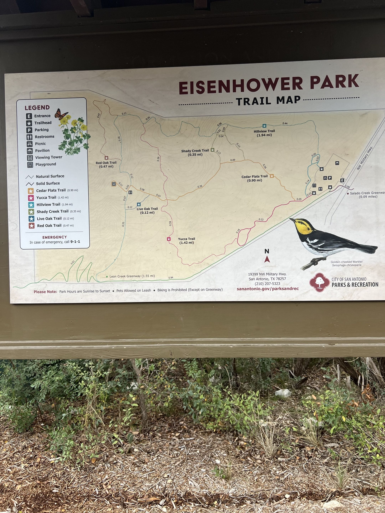
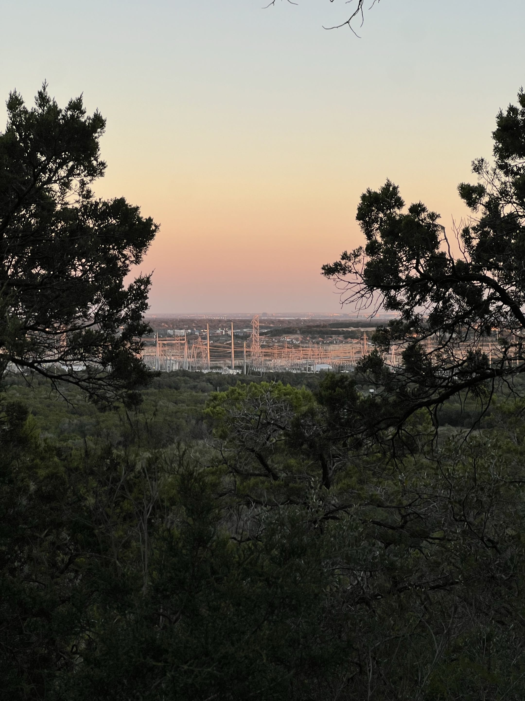
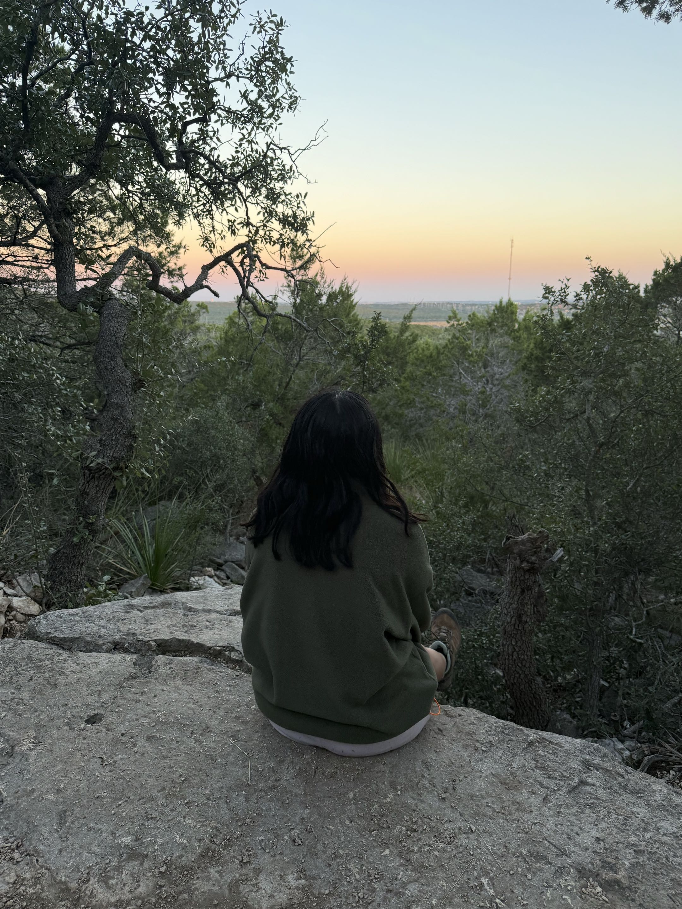
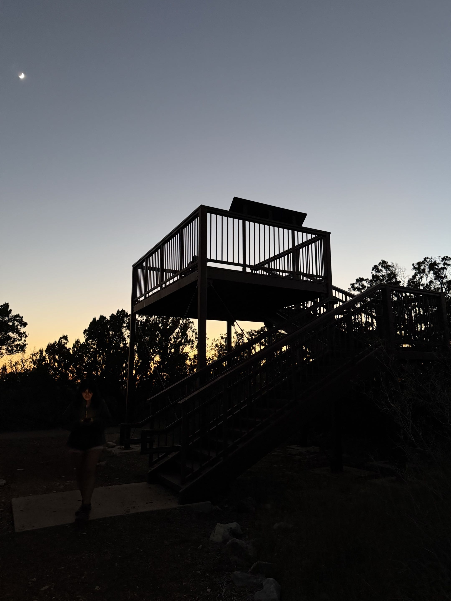
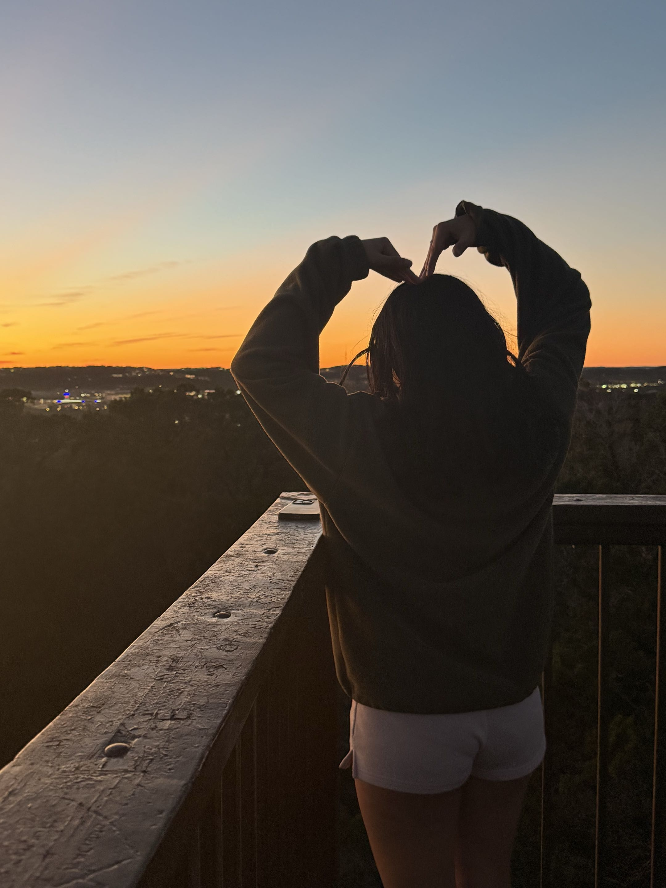
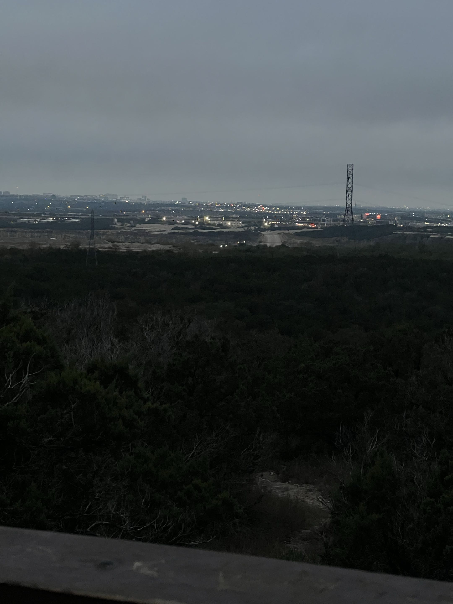
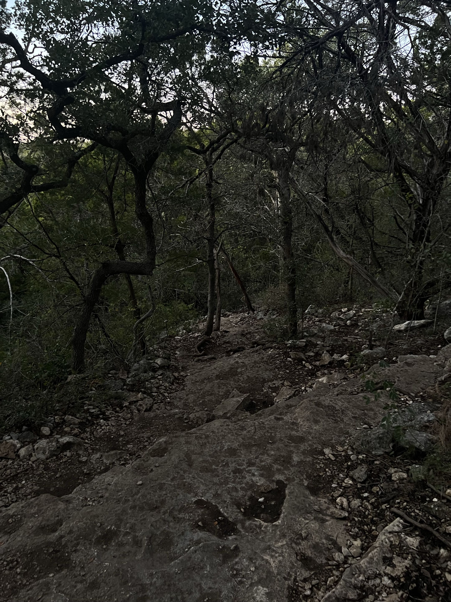
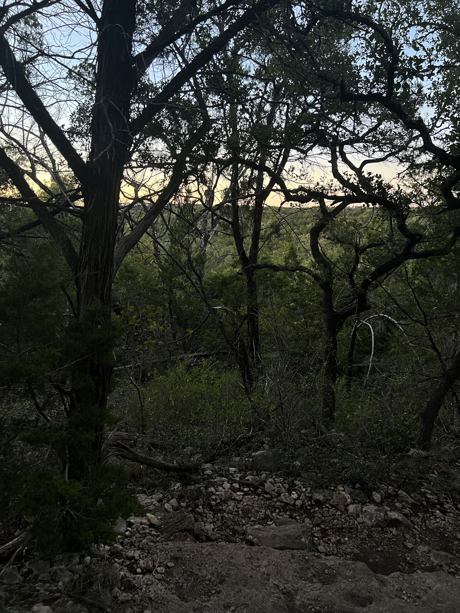
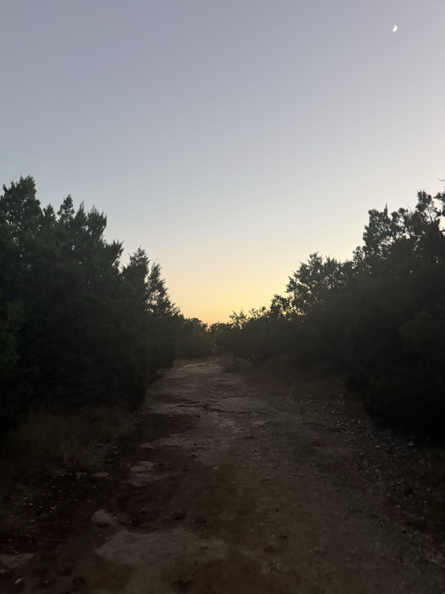
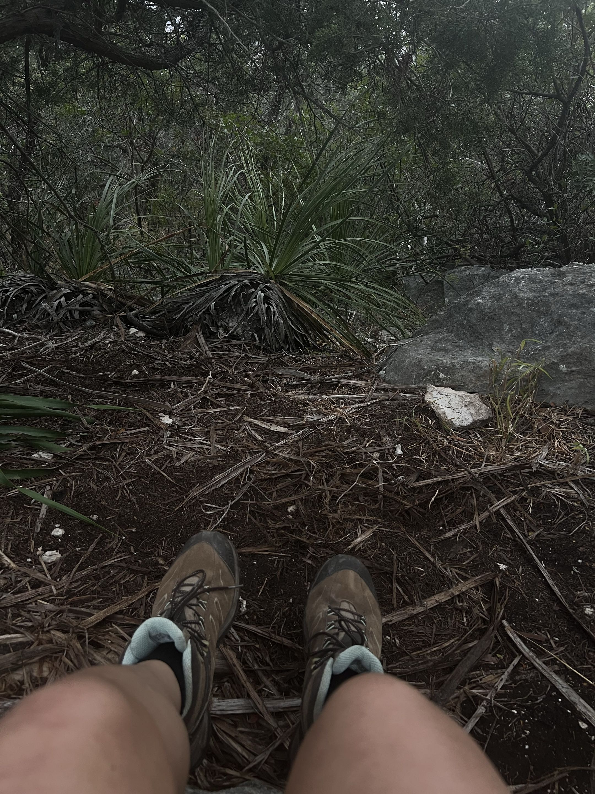

Reading the Cultural Landscape · by Aby Huerta
Eisenhower Park is located at 19399 NW Military Highway on the northern edge of San Antonio and spans 420 acres of Texas Hill Country. It gets a pretty wide range of visitors, families, hikers, fitness people, all coming for the different trails it has to offer. But the history behind this land is really different from what I expected, even after leaving the park. Before it was a park, this was part of Camp Bullis, a U.S. Army training ground used to prepare soldiers for deployment. The park is named after President Dwight D. Eisenhower, who was stationed at nearby Fort Sam Houston. As San Antonio kept growing, the city acquired the land in 1973 and opened it to the public in 1988. However even today the military camp is still functioning right next to the park, which made the arrival intimidating since the entrances are so close to each other. I picked this park because it felt like somewhere you could actually see Peirce Lewis's Corollary of Cultural Change happening first hand. This land went from being a closed off military zone to a public space where people go to decompress and connect with nature on the weekends. That kind of shift doesn't just happen on its own, there is a lot of cultural pressure and intention behind it. I wanted to go out there and see what was still left behind and what it could tell us about what San Antonio looks like and values right now.






When I first started this project and was headed to this park, I thought it was going to be a chill hike and I would take some pictures. I didn't think I would actively make as many observations and go into deep thought about the things i was seeing. The moment that stood out to me was walking up that steep rocky section and noticed those thick wooden logs wedged into the dirt. They were like a staircase built into the trail but it was in a way that made it looks like it was always there.That kind of stopped me because it made me realize that even the parts of the park that feel the most wild and untouched are still carefully engineered by someone. This kind of pattern repeated showed up in many instances like the wooden tower, the power lines standing out past the canopy, and the city lights that had a very sharp and noticeable stop right where the park began. It was all intentional. Peirce Lewis's idea that landscape is a cultural autobiography really made sense to me standing up on that tower looking out. Eisenhower Park is not just trees and rocks, it is a reflection of what San Antonio values and how we have chosen to live. We want the feeling of being out in nature but we still need the cell service, the safety railings, and the engineered trail to do it comfortably. I was literally on the phone with my partner walking back down in the dark, which honestly said it all. Yes I was hiking in the trees and uneven terrain but the "city" was still very much present that isn't so noticeable!
there was also many parts where i felt less of engineering presence haha



